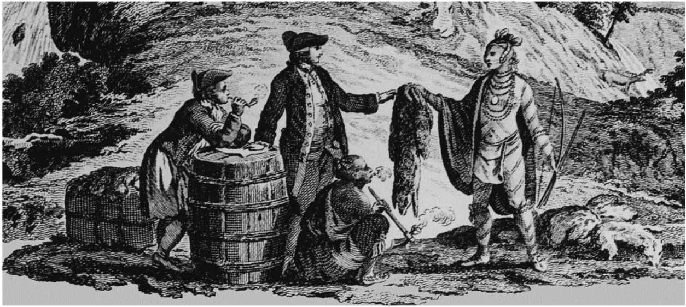
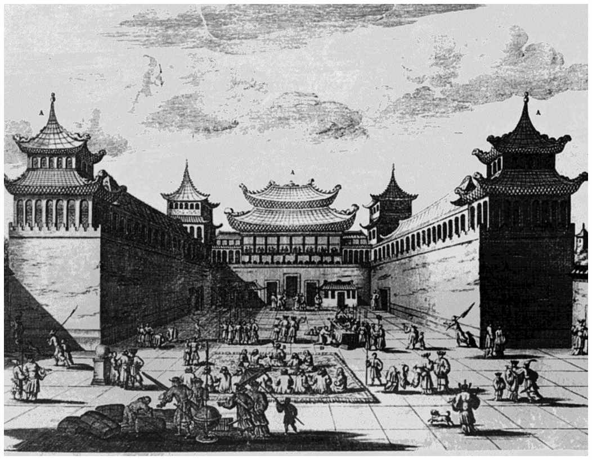
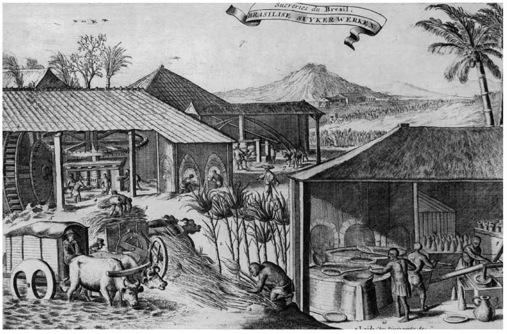

到18世纪的后一段时期，规模巨大的洲际贸易已在历史上首次发展起来。1500年以前，阿拉伯和意大利商人就已在欧亚大陆一地区和另一地区之间贩运商品，主要是奢侈品——香料、丝绸、宝石和香精。到18世纪末，这种有限的奢侈品贸易转变为基于新的大宗生活必需品的大规模贸易。大西洋贸易的规模尤为巨大，因为美洲大陆的种植园先生产了大量烟草和蔗糖，后来又生产了大量咖啡、棉花及其他商品，在欧洲销售。这种种植园实行单一经营，所以它们进口各类必需品，如谷物、鱼、布匹和金属制品；同时还必须输入劳动力，从而导致了繁荣一时的三角贸易：欧洲的朗姆酒、布匹、枪炮及其他金属制品被运到非洲，非洲的奴隶被运到美洲，美洲的蔗糖、烟草和金银被运到欧洲。

图169 殖民者正与当地居民做交易。
这一时代新的、大规模的全球性贸易的另一个重要方面是东、西欧之间的商品交换。这里，西欧又得到了种种原料，尤其是做面包用的谷物，需求量很大，这是因为人口增加，并且大量可耕地变为牧场。在从事波罗的海谷物贸易的主要港口但泽（今格但斯克），黑麦、大麦和燕麦的价格在1550年至1600年间分别上涨了247%、187％和185%。这种情况促使谷物及其他原料的出口量大大增加，因此，波兰和匈牙利销往西方的出口商品的价格在这数十年间通常是进口商品价格的两倍。波兰、匈牙利、俄国，最后还有巴尔干半岛各国，得到了纺织品、武器、金属制品以及殖民地商品；作为回报，它们提供了谷物、牛、兽皮、船用补给品和亚麻。它们也提供毛皮；毛皮是西伯利亚的俄罗斯人通过采用西班牙人在美洲获取金银的同样方法——剥削土著劳动力——而获得的。
欧洲与亚洲的贸易比不上与美洲或东欧的贸易，其主要原因有两个。第一个原因是，欧洲的纺织行业反对从亚洲各国进口棉织品。这些外国产的棉织品由于分量轻，颜色亮，价格低，尤其是耐洗，在欧洲非常受欢迎。它们开始被大量进口。但是很快，本地纺织界和一部分人——这部分人担心为支付外国棉织品而造成的金银流失会危及国家安全——提出了反对。这些人为了保证禁止或削减进口印度棉布的法律获得通过，对他们各自的政府施加了足够的压力。

图170 北京宫廷接待了由彼尔特·万·霍恩率领的荷兰贸易使团（1668年）。
限制欧洲与亚洲的贸易的第二个原因是，难以找到能在亚洲市场上出售的物品。这个问题从古典时代起就有了；那时，罗马帝国为支付中国的丝绸和印度的纺织品而耗尽自己的黄金。16世纪、17世纪和18世纪时，情况还是如此，亚洲仍然对欧洲商品不感兴趣，而欧洲则勉强地用金银去支付它所想要的亚洲产品。欧洲直到18世纪末叶发展起动力机器时才解决与亚洲贸易中的这一问题。那时的形势正好相反，因为欧洲能使机织的廉价纺织品充斥亚洲。但是，在那之前，东西方贸易由于亚洲只愿意接受欧洲金银、很少接受欧洲的其他物品而一直受到阻碍。
这种新的世界性经济关系的意义何在呢？首先，第一次国际分工已大规模地完成。世界正在成为一个经济单位。美洲和东欧（与西伯利亚一起）生产原料，非洲提供人力，亚洲提供各种奢侈品，而西欧则指挥这些全球性活动，并愈益倾全力于工业生产。
亚当·斯密谈欧洲的扩张
在其所著的世界名著《国富论》（1776年）中，亚当·斯密对殖民地的影响给予了极大的关注。他提到，殖民地的存在增加了欧洲诸殖民宗主国的财富（西班牙和葡萄牙除外）。*
美洲的发现和经由好望角抵达东印度航线的开辟，是人类历史上最伟大、最重要的两件事。它们的影响一直都非常巨大，但是，在这些发现之后短短的两到三个世纪中，它们影响的整个范围尚无法确定。人类的智慧无法预见，人类今后将从这些重大事件中获得哪些利益或遭受哪些不幸。这两个事件某种程度上把世界上相距最遥远的部分关联在一起，使它们能互通有无，增加彼此的快乐，促进彼此的工业，因此，它们的总体趋势似乎是有益的。
同时，这些发现的重要结果之一是将重商主义提升到了一个显赫的、光荣的、从未达到过的程度上。重商主义的目标是通过贸易和制造业，而不是通过土地的改良和耕种，是通过城市的工业，而不是通过农村的工业，来使一个大国变得富足。但是，因为有了这些发现，欧洲的商业城镇不再只是世界一小部分（这部分指欧洲的大西洋沿岸地区，以及波罗的海和地中海沿岸国家）的制造者和运输者，现在已成为为数众多的、兴旺的美洲耕种者的制造者，也是亚洲、非洲、美洲几乎所有国家的运输者和某种程度上的制造者。两个新世界都对它们的工业打开了大门，每个都比过去的更巨大、更广阔，其中一个市场每天都在越来越大地发展。
的确，拥有美洲殖民地且能直接与东印度进行贸易的国家享受着这一巨大贸易的全部荣耀与光辉。不过，其他国家尽管有各种意在排挤它们的令人厌恶的限制，也常常能享受到这一贸易的实际收益的较大部分。例如，西班牙和葡萄牙的殖民地对其他国家工业的实际促进比对西班牙和葡萄牙本国工业的促进还要多。仅就亚麻布一项而言，据说，这些殖民地的年消费额可达300万英镑以上，当然，我不敢保证这一数据的准确。但是，这一巨大的消费量几乎全由法国、佛兰德、荷兰和德国提供。西班牙和葡萄牙仅提供一小部分。向这些殖民地提供的大量亚麻布的资本每年都在其他国家的居民中分配，且为他们提供收入。
* Adam Smith, Wealth of Nations（Edinburg，1838）, p. 282.
新的全球性经济在原料生产区提出了如何得到足够的劳动力供应的问题。美洲种植园通过大规模输入非洲奴隶解决了这一问题。因此，非洲黑人如今正是在以往专门从事种植园农业的那些地区——巴西北部、西印度群岛和美国南部——为数非常多。早期欧洲人为解决劳动力需求问题留下了一份痛苦的遗产，这些地区至今仍由于始于殖民地时期的基本问题——种族歧视和不发达问题——而遭受严重破坏。当前，美国少数民族聚居区和加勒比海岛屿的种族冲突是长达四个多世纪的横跨大洋的奴隶贸易的最终结果，而整个拉丁美洲的不发达则只不过是西班牙、葡萄牙殖民地（以及西班牙和葡萄牙本身）对于西北欧的经济依附关系的继续。
为参加这一新的全球性经济，美洲付出的代价是实行奴隶制，东欧付出的代价则是实行农奴制。其基本原因相同，即需要有充裕的、可靠的廉价劳动力供应，以便为生利的西欧市场生产商品。在此之前，波兰和匈牙利贵族要求农民提供的劳动是最低限度的——一年义务劳动3天至6天——因为不存在增加产量的诱因。但是，当面向市场的生产变得有利可图时，贵族就很快响应，大幅度地将义务劳动的时间增至每周一天，到16世纪末已增至每周6天。为了保证农民继续承担这种劳役，还通过了越来越严格的限制农民自由迁移的法律。最终，农民被完全束缚在土地上，从而成为没有迁移自由的农奴，受到贵族的强征勒索。
非洲也受到新的全球经济的深刻影响，成为美洲种植园的奴隶劳动力的来源。非洲的奴隶制在跨洋贸易之前就已存在，奴隶被用作士兵和农夫。奴隶也随黄金一起被出口，他们沿着古老的商路穿越撒哈拉沙漠，到达地中海沿岸，从这里被用船运走，绝大多数被运往中东地区。据估计，在跨大西洋奴隶贸易之前，有350万到1000万非洲人是以这种方式被卖掉的。
葡萄牙人是跨大西洋奴隶贸易的先锋，他们最初是把非洲人卖到西班牙、意大利和葡萄牙做家务和农活。然而，其数量和不久后被运到美洲大陆种植园工作的大批奴隶相比微不足道。当地的印第安人无法满足种植园的用工需要，因为他们染上了来自欧洲的疾病，正在灭绝。种植园主起初想雇欧洲的契约工人，但是，他们工资太高且自由散漫，于是就改用了非洲奴隶；第一批奴隶是在哥伦布首次远航后不久被运来的。16世纪20年代在秘鲁发现银矿和40年代在巴西建立甘蔗种植园以后，奴隶的数量激增；而在墨西哥和加勒比海群岛建立起新的生产烟草、大米和咖啡等作物的种植园以后，奴隶的数量更是进一步增加。有关奴隶总数的估计相差很大，最新的研究表明，1500年至1867年间，有1200万到2000万奴隶被迫运离非洲。结果，到1850年，在美洲，非洲裔奴隶的人数是白人的3倍至4倍。
奴隶贸易对非洲的影响因地区而迥然不同。安哥拉和东非受损失严重，因为那里的人口一开始就比较稀少，经济上常常接近于仅能糊口的水平，所以，即使损失的人口很少，其影响也是毁灭性的。相比之下，西非经济上较先进，人口较稠密，因此，奴隶贩子的劫掠也不是那么具有毁灭性。从整个大陆来看，由于运走奴隶的时期从1450年延续到1870年，而被运走奴隶的撒哈拉以南非洲的总人口据估计有7000万至8000万，故人口方面的影响并没有预想的那么大。不过，奴隶贸易对非洲从塞内加尔到安哥拉的整个沿海地区和方圆四五百英里的内地，有一种腐蚀性的、扰乱性的影响。携带朗姆酒、枪炮和金属器具等货物的欧洲奴隶贩子的到来，引起了一个连锁反应：侵袭内地猎取奴隶。各种各样的集团为了控制这种有利可图的、军事上起决定作用的贸易而相互征战。有些组织和地区如阿散蒂联盟和达荷美王国上升到支配地位，其他组织和地区如约鲁巴、贝宁文明区和刚果王国则日渐衰落。奴隶贸易总的影响肯定是破坏性的。
然而，奴隶贸易除包括占有奴隶外，的确还包括贸易。非洲人亲自把自己的同胞卖给欧洲人后，作为回报，不仅得到了酒和火器，而且还得到了某些实用和具有经济产出的商品，包括纺织品、工具和供当地铁匠铺和作坊使用的原料。从长远的观点来看，一个更重要的积极影响是，从美洲引进了新的粮食作物。玉米、木薯、白薯、胡椒、菠萝和烟草被葡萄牙人引进非洲后，非常迅速地在各部落中间传播开来。因此，现在一直在议论这个问题：用这些新食物实际上能供养大量的人，其数目或许会超过在奴隶贸易中失去的人口总数。另一方面，奴隶贸易并不是引入新作物的必不可少的因素。新作物近几个世纪中在全球范围内迅速传播，不论有没有奴隶制，它们无疑都会像传播到中国内地一样传播到非洲内地。

图171 巴西和西印度群岛的甘蔗种植园是奴隶劳工的一大需求源。此图显示，奴隶们正在榨取甘蔗，制造蔗糖，这些糖随后被出口到欧洲的消费市场。
在各大陆中，亚洲受到的影响最小，因为它在军事、政治和经济上已强大到足以避免直接或间接的征服。亚洲大部分地区完全没有注意到正在沿海地区涌现的那些坚持不懈的、令人讨厌的欧洲商人。只有印度的少数沿海地区和东印度群岛的某些岛屿感觉到欧洲早期经济扩张的影响。就整个亚洲而论，亚洲的态度由中国皇帝乾隆在答复1793年英王乔治三世要求建立外交和贸易关系的一封信时作了最好的表达，他说：
天朝抚有四海，惟励精图治，办理政务，奇珍异宝并不贵重……其实天朝……种种贵重之物……无所不有。尔之正使等所亲见。然从不贵奇巧，并无更需尔国制办物件。[2]
欧洲也受到新的全球性经济的影响，但是，所受到的影响全是积极的。欧洲人是世界贸易最早的中间人。他们开辟了新的外洋航线，提供了必需的资本、船舶和专门技术。自然，他们从奴隶贸易、甘蔗和烟草种植园以及东方贸易中得益也最多。有些利益慢慢地为欧洲民众所获得，茶叶的情况可表明这一点；茶叶于1650年前后被引进英国时，每磅的价值大约为10英镑，然而一个世纪后，它已成为普通消费品。比对生活水平的影响更重要的，是新的全球性贸易对欧洲经济的刺激。以后我们将会提到，18世纪末叶开始进行的工业革命在很大程度上应该归功于从海外事业中积聚起来的资本和海外市场对欧洲制造品日渐增长的需要。
因此，正是在这一期间，欧洲突飞猛进，迅速上升到世界经济首位。总的结果是积极的，因为世界分工导致世界生产率的增长。1763年的世界比1500年的世界富裕，而且，经济增长一直持续到现在。但是，从一开始起，西北欧就作为世界创业者，得到大部分利益而损害了其他地区。从当前的种族冲突、富国与穷国间的显著差异，以及农奴制在整个东欧和奴隶制在整个世界留下的伤痕中，都可清楚地看出这种损害所包含的内容。